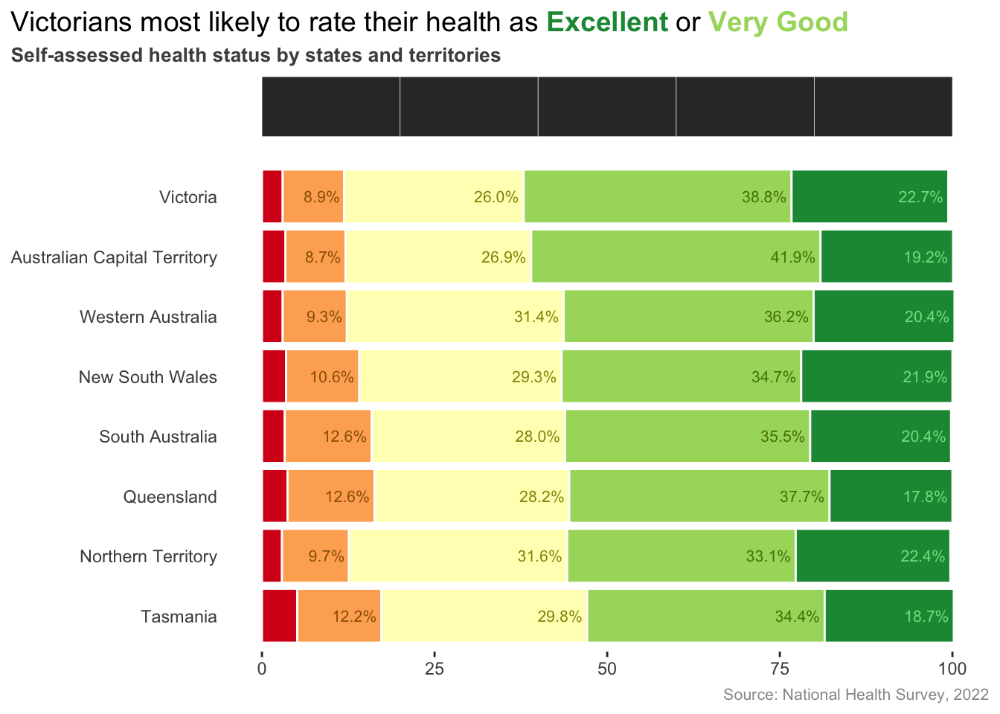
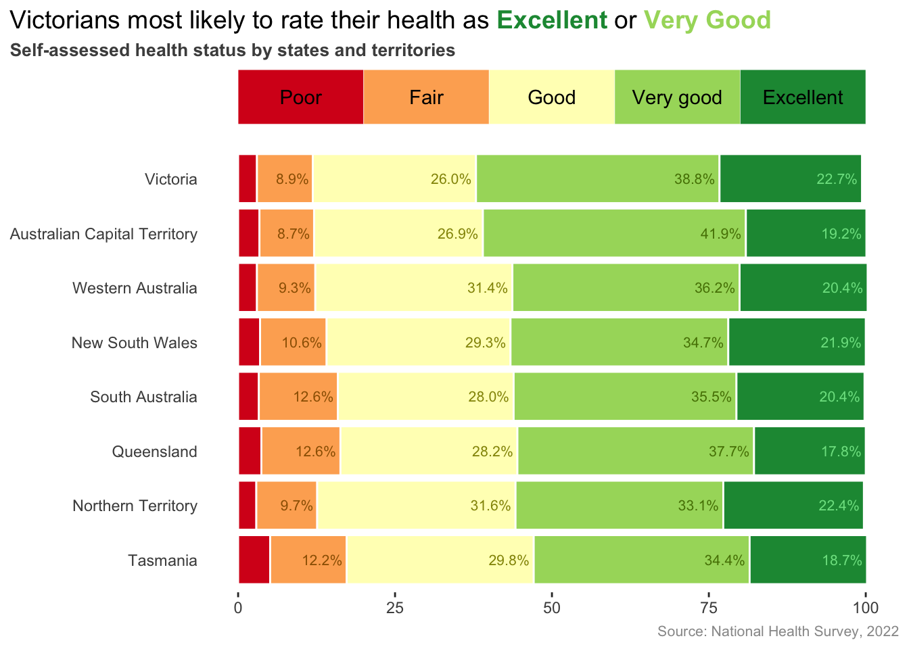
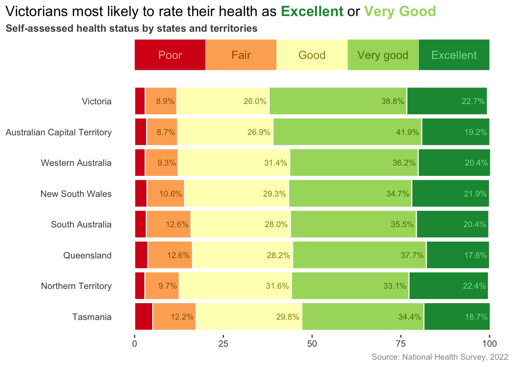

We are nearly there! In this section we will add a bespoke legend to the plot.
2 Turn the legend back on
We previously turned off the legend by setting legend.position = "none" in our theme(). If we remove that line of code this is what we get.
Code
# Turn on legendggplot(data=df1Plot,aes(x = percent, y =fct_reorder(state, totalHealthy), fill = status,color = status,label =paste0(format(percent, nsmall=1), '%'))) +geom_col(position =position_stack(reverse =TRUE),color ="white") +geom_text(position =position_stack(reverse =TRUE),size =8/.pt, hjust =1.1) +scale_fill_manual(name =NULL, values = barCols) +scale_colour_manual(name =NULL, values = label_text_colors) +scale_y_discrete(NULL) +scale_x_continuous(NULL) +labs(title ='Victorians most likely to rate their health as <span style="color: #1A9641;">**Excellent**</span> or <span style="color: #A6D96A;">**Very Good**</span>',subtitle ='Self-assessed health status by states and territories',caption ='Source: National Health Survey, 2022') +theme(plot.title.position ='plot',plot.title =element_markdown(size=14, vjust=2),plot.subtitle =element_text(size=10, color ='grey30', face ='bold'),plot.caption =element_text(size=8, color ='grey60'),panel.background =element_blank(),axis.ticks.y =element_blank() )
This is a combined legend for the bar colours and the text label colours (those are the little “a”s in the legend boxes).
3 Remove the text label legend
The text label colours don’t add much information and are a bit unsightly. We can quickly get rid of them by setting show.legend = FALSE within geom_text().
Code
ggplot(data=df1Plot,aes(x = percent, y =fct_reorder(state, totalHealthy), fill = status,color = status,label =paste0(format(percent, nsmall=1), '%'))) +geom_col(position =position_stack(reverse =TRUE),color ="white") +geom_text(position =position_stack(reverse =TRUE),size =8/.pt, hjust =1.1,show.legend =FALSE) +scale_fill_manual(name =NULL, values = barCols) +scale_colour_manual(name =NULL, values = label_text_colors) +scale_y_discrete(NULL) +scale_x_continuous(NULL) +labs(title ='Victorians most likely to rate their health as <span style="color: #1A9641;">**Excellent**</span> or <span style="color: #A6D96A;">**Very Good**</span>',subtitle ='Self-assessed health status by states and territories',caption ='Source: National Health Survey, 2022') +theme(plot.title.position ='plot',plot.title =element_markdown(size=14, vjust=2),plot.subtitle =element_text(size=10, color ='grey30', face ='bold'),plot.caption =element_text(size=8, color ='grey60'),panel.background =element_blank(),axis.ticks.y =element_blank() )
This simply legend works quite well and if you are happy with this you can finish this exercise here!
4 Add a bespoke legend
The final figure places the legend in a horizontal orientation with the legend colours matching reflecting the colours in the bars, changing from red to green as the eye scans from left to right.
To achieve this effect I turned of the default legend and built a bespoke legend using geom_tile() for the coloured boxes and geom_text() for the legend labels.
The first step to do this is to create a new dataframe which defines the x and y position of the coloured boxes that comprise the legend.
This data frame has 2 columns and five rows. Each pair of x-y coordinates defines the center of a legend box, with the first box positioned at 10 along the x-axis and the last box positioned at 90.
Here is the trickiest part of this step: because our chart is now being built using two separate data frames we need to move the calls to data= and aes() from their current position within ggplot() to their individuals geoms.
For example, we will move from this general structure
When we do this, we only have to retain the aesthetics that are relevant for each geom. So we can drop label = in the aes() for geom_col() (the columns themselves have no label) and we can drop fill = in the aes() for geom_text() (the text itself has no fill).
Code
# Data frame for legendlegendDf <-data.frame(y =rep(9.5, 5),x =10+0:4*20)ggplot() +geom_col(data = df1Plot,aes(x = percent, y =fct_reorder(state, totalHealthy), fill = status,color = status),position =position_stack(reverse =TRUE),color ="white") +geom_text(data = df1Plot,aes(x = percent, y =fct_reorder(state, totalHealthy), color = status,label =paste0(format(percent, nsmall=1), '%')),position =position_stack(reverse =TRUE),size =8/.pt,hjust =1.1,show.legend =FALSE) +scale_fill_manual(name =NULL, values = barCols) +scale_colour_manual(name =NULL, values = label_text_colors) +scale_y_discrete(NULL) +scale_x_continuous(NULL) +geom_tile( # The legend boxdata = legendDf,aes(x = x, y = y),color ='white') +labs(title ='Victorians most likely to rate their health as <span style="color: #1A9641;">**Excellent**</span> or <span style="color: #A6D96A;">**Very Good**</span>',subtitle ='Self-assessed health status by states and territories',caption ='Source: National Health Survey, 2022') +theme(plot.title.position ='plot',plot.title =element_markdown(size=14, vjust=2),plot.subtitle =element_text(size=10, color ='grey30', face ='bold'),plot.caption =element_text(size=8, color ='grey60'),panel.background =element_blank(),axis.ticks.y =element_blank(),legend.position ='none' )

5 Add colour fill
The position looks ok. Now lets colour in the legend box. We want to use the same colour palette as the bars so we will take advantage of the existing healthStatus variable and append a similar variable to our legend data frame. We can then map the fill colour for geom_tile() to this variable. Because the fill variable name is the same factor, the existing scale_color_manual() ensures the colours are the same.
Code
# Define health status levelshealthStatus <-c("Poor", "Fair", "Good", "Very good", "Excellent")# Data frame for legendlegendDf <-data.frame(y =rep(9.5, 5),x =10+0:4*20,label =factor(healthStatus, levels = healthStatus))ggplot() +geom_col(data = df1Plot,aes(x = percent, y =fct_reorder(state, totalHealthy), fill = status,color = status),position =position_stack(reverse =TRUE),color ="white") +geom_text(data = df1Plot,aes(x = percent, y =fct_reorder(state, totalHealthy), color = status,label =paste0(format(percent, nsmall=1), '%')),position =position_stack(reverse =TRUE),size =8/.pt,hjust =1.1,show.legend =FALSE) +scale_fill_manual(name =NULL, values = barCols) +scale_colour_manual(name =NULL, values = label_text_colors) +scale_y_discrete(NULL) +scale_x_continuous(NULL) +geom_tile( # The legend boxdata = legendDf,aes(x = x, y = y, fill = label),color ='white') +labs(title ='Victorians most likely to rate their health as <span style="color: #1A9641;">**Excellent**</span> or <span style="color: #A6D96A;">**Very Good**</span>',subtitle ='Self-assessed health status by states and territories',caption ='Source: National Health Survey, 2022') +theme(plot.title.position ='plot',plot.title =element_markdown(size=14, vjust=2),plot.subtitle =element_text(size=10, color ='grey30', face ='bold'),plot.caption =element_text(size=8, color ='grey60'),panel.background =element_blank(),axis.ticks.y =element_blank(),legend.position ='none' )
6 Add legend text labels
We can use the same legend dataframe to impose text labels on top of the legend boxes. As with the column labels, we can do this with geom_text().
Code
ggplot() +geom_col(data = df1Plot,aes(x = percent, y =fct_reorder(state, totalHealthy), fill = status,color = status),position =position_stack(reverse =TRUE),color ="white") +geom_text(data = df1Plot,aes(x = percent, y =fct_reorder(state, totalHealthy), color = status,label =paste0(format(percent, nsmall=1), '%')),position =position_stack(reverse =TRUE),size =8/.pt,hjust =1.1,show.legend =FALSE) +scale_fill_manual(name =NULL, values = barCols) +scale_colour_manual(name =NULL, values = label_text_colors) +scale_y_discrete(NULL) +scale_x_continuous(NULL) +geom_tile( # The legend boxdata = legendDf,aes(x = x, y = y, fill = label),color ='white') +geom_text( # The legend boxdata = legendDf,aes(x = x, y = y, label = label)) +labs(title ='Victorians most likely to rate their health as <span style="color: #1A9641;">**Excellent**</span> or <span style="color: #A6D96A;">**Very Good**</span>',subtitle ='Self-assessed health status by states and territories',caption ='Source: National Health Survey, 2022') +theme(plot.title.position ='plot',plot.title =element_markdown(size=14, vjust=2),plot.subtitle =element_text(size=10, color ='grey30', face ='bold'),plot.caption =element_text(size=8, color ='grey60'),panel.background =element_blank(),axis.ticks.y =element_blank(),legend.position ='none' )

7 Colour the legend text labels
We can apply a nice contrasting colour for the text labels by using the text colour palette we defined previously. We just need to map colour to the label variable i.e. aes(color = label). Again, because we are using the same factor variable, our previously defined scale_colour_manual() will do the rest.
Code
# Colour the legend textggplot() +geom_col(data = df1Plot,aes(x = percent, y =fct_reorder(state, totalHealthy), fill = status,color = status),position =position_stack(reverse =TRUE),color ="white") +geom_text(data = df1Plot,aes(x = percent, y =fct_reorder(state, totalHealthy), color = status,label =paste0(format(percent, nsmall=1), '%')),position =position_stack(reverse =TRUE),size =8/.pt,hjust =1.1,show.legend =FALSE) +scale_fill_manual(name =NULL, values = barCols) +scale_colour_manual(name =NULL, values = label_text_colors) +scale_y_discrete(NULL) +scale_x_continuous(NULL) +geom_tile( # The legend boxdata = legendDf,aes(x = x, y = y, fill = label),color ='white') +geom_text( # The legend boxdata = legendDf,aes(x = x, y = y, label = label, color = label)) +labs(title ='Victorians most likely to rate their health as <span style="color: #1A9641;">**Excellent**</span> or <span style="color: #A6D96A;">**Very Good**</span>',subtitle ='Self-assessed health status by states and territories',caption ='Source: National Health Survey, 2022') +theme(plot.title.position ='plot',plot.title =element_markdown(size=14, vjust=2),plot.subtitle =element_text(size=10, color ='grey30', face ='bold'),plot.caption =element_text(size=8, color ='grey60'),panel.background =element_blank(),axis.ticks.y =element_blank(),legend.position ='none' )
8 Add in the legend text colour for Poor
This looks okay, but one issue is that there is no label text color for the category Poor, which we previously set to transparent.
To fix this we need to define a second version of the text label color palette which includes a colour for Poor. As before, we can use the lighten() function to specify a nicely contrasting colour, here 60% lighter than the original red.
# Custom colors for legend text (includes red)label_text_colors2 <-c(lighten(barCols[1], 0.6),darken(barCols[2], 0.4),darken(barCols[3], 0.4),darken(barCols[4], 0.4),lighten(barCols[5], 0.6))label_text_colors2
In base ggplot2, we can only map the colour aesthetic to a single set of colours. Put another way, we can only define scale_colour_manual() once. Luckily, we can get around this using the ggnewscale package, which allows you to add multiple colour and fill scales. To add a second colour scale w need to include new_scale_color() in our code before we specify our second scale_colour_manual() to define the legend text label colours.
Code
# Custom colors for legend text (includes red)label_text_colors2 <-c(lighten(barCols[1], 0.6),darken(barCols[2], 0.4),darken(barCols[3], 0.4),darken(barCols[4], 0.4),lighten(barCols[5], 0.6))# Library to allow second colour mappinglibrary(ggnewscale)ggplot() +geom_col(data = df1Plot,aes(x = percent, y =fct_reorder(state, totalHealthy), fill = status,color = status),position =position_stack(reverse =TRUE),color ="white") +geom_text(data = df1Plot,aes(x = percent, y =fct_reorder(state, totalHealthy), color = status,label =paste0(format(percent, nsmall=1), '%')),position =position_stack(reverse =TRUE),size =8/.pt,hjust =1.1,show.legend =FALSE) +scale_fill_manual(name =NULL, values = barCols) +scale_colour_manual(name =NULL, values = label_text_colors) +scale_y_discrete(NULL) +scale_x_continuous(NULL) +geom_tile( # The legend boxdata = legendDf,aes(x = x, y = y, fill = label),color ='white') +new_scale_colour() +geom_text( # The legend boxdata = legendDf,aes(x = x, y = y, label = label, color = label)) +scale_colour_manual(name =NULL, values = label_text_colors2) +labs(title ='Victorians most likely to rate their health as <span style="color: #1A9641;">**Excellent**</span> or <span style="color: #A6D96A;">**Very Good**</span>',subtitle ='Self-assessed health status by states and territories',caption ='Source: National Health Survey, 2022') +theme(plot.title.position ='plot',plot.title =element_markdown(size=14, vjust=2),plot.subtitle =element_text(size=10, color ='grey30', face ='bold'),plot.caption =element_text(size=8, color ='grey60'),panel.background =element_blank(),axis.ticks.y =element_blank(),legend.position ='none' )

9 Tidy up the legend
This looks great! As a final step we can make this a bit neater by reducing the height of the legend box and using a smaller font for the legend text labels.
Code
ggplot() +geom_col(data = df1Plot,aes(x = percent, y =fct_reorder(state, totalHealthy), fill = status,color = status),position =position_stack(reverse =TRUE),color ="white") +geom_text(data = df1Plot,aes(x = percent, y =fct_reorder(state, totalHealthy), color = status,label =paste0(format(percent, nsmall=1), '%')),position =position_stack(reverse =TRUE),size =8/.pt,hjust =1.1,show.legend =FALSE) +scale_fill_manual(name =NULL, values = barCols) +scale_colour_manual(name =NULL, values = label_text_colors) +scale_y_discrete(NULL) +scale_x_continuous(NULL) +geom_tile( # The legend boxdata = legendDf,aes(x = x, y = y, fill = label),color ='white', height =0.65) +new_scale_colour() +geom_text( # The legend boxdata = legendDf,aes(x = x, y = y, label = label, color=label),size =8/.pt) +scale_colour_manual(name =NULL, values = label_text_colors2) +labs(title ='Victorians most likely to rate their health as <span style="color: #1A9641;">**Excellent**</span> or <span style="color: #A6D96A;">**Very Good**</span>',subtitle ='Self-assessed health status by states and territories',caption ='Source: National Health Survey, 2022') +theme(plot.title.position ='plot',plot.title =element_markdown(size=14, vjust=2),plot.subtitle =element_text(size=10, color ='grey30', face ='bold'),plot.caption =element_text(size=8, color ='grey60'),panel.background =element_blank(),axis.ticks.y =element_blank(),legend.position ='none' )